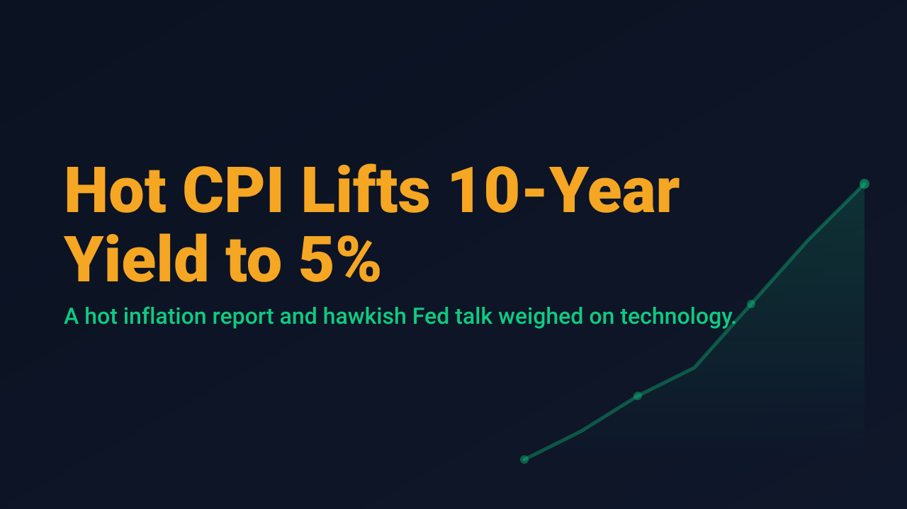
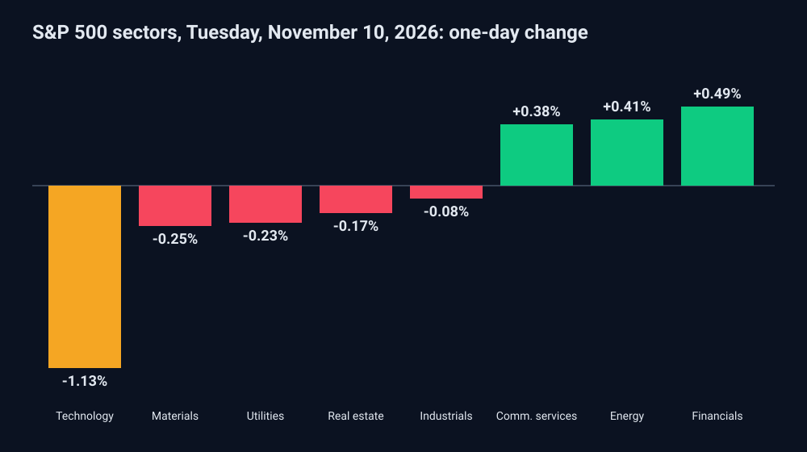

Hot CPI Lifts 10-Year Yield to 5%

US stocks closed lower on Tuesday, November 10, 2026, after the October consumer price report came in hotter than economists expected and pushed Treasury yields back to a round number. The Dow Jones Industrial Average slipped 0.30% to 52,231.89, the S&P 500 lost 0.38% to 7,520.93, and the Nasdaq Composite fell 0.74% to 25,065.88, according to TheStreet. The small-cap Russell 2000 declined 0.68% to 2,821.38.
The data drove the move. Headline consumer prices rose 0.4% in October against a 0.3% expectation in a Dow Jones survey, following a 0.6% gain in September. Core prices, which exclude food and energy, rose 0.3% against an expected 0.2%. StockTitan noted that core prices have now risen 0.3% or more in 5 of the first 10 months of 2026, and that no yearly rate was published for October because prices could not be collected in October 2025 during the shutdown.
The rate market responded quickly. The 10-year Treasury yield rose 13.8 basis points to 5.00%, per TheStreet. Fed Governor Christopher Waller said he would support at least a quarter-point rate hike in December, and added that a half-point increase should be considered if core prices again rise 0.3% or more from September. For equities, higher discount rates fall hardest on long-duration growth stocks, and the sector tape reflected that.

Technology fell 1.13%, the only major sector to lose more than 1%, according to TheStreet. Financials gained 0.49%, energy 0.41%, and communication services 0.38%. Breadth was negative, with 60.9% of US-listed issues declining. Nvidia closed down 5.47%, according to StockTitan, with TheStreet linking the weakness to a lawsuit involving CEO Jensen Huang. CoreWeave was scheduled to report third-quarter results after the closing bell.
Energy offered a partial offset on the macro side. WTI crude traded at $85.53, down 1.52% in early trading, after President Trump said he planned to hold off on new strikes against Iran, TheStreet reported. StockTitan added that the AAA national average for regular gasoline fell below $4 a gallon for the first time since July.
One hot report does not settle the path of policy, but it narrows the margin for error. Traders should watch whether the 10-year yield holds at 5%, whether technology stabilizes after its sector decline, and how the next inflation reading compares with the 0.3% core threshold the Fed is now watching.